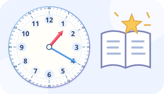
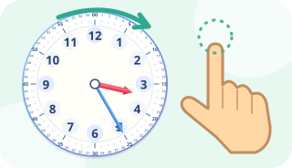
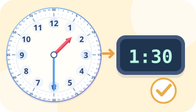
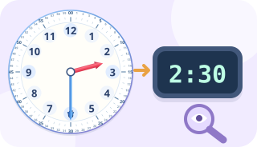
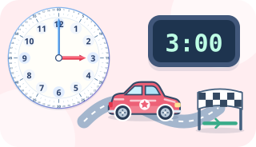

Explora, practica y une cada reloj con su hora.





Arrastra las cifras en orden para formar la hora y los minutos.
Estos ajustes se aplican a todos los modos. Cada actividad conserva únicamente sus opciones exclusivas.